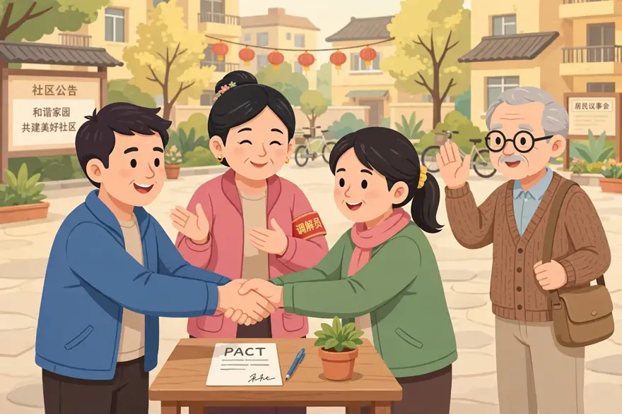
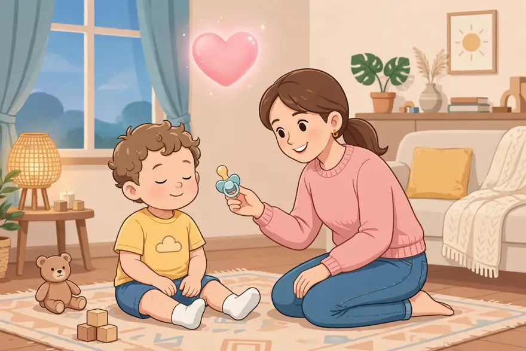
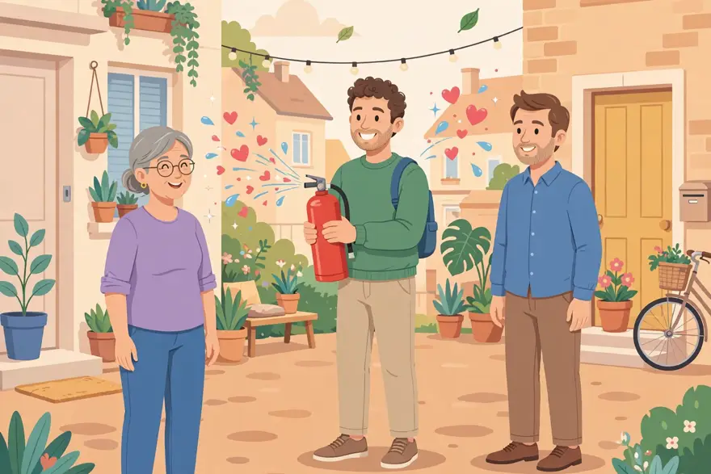
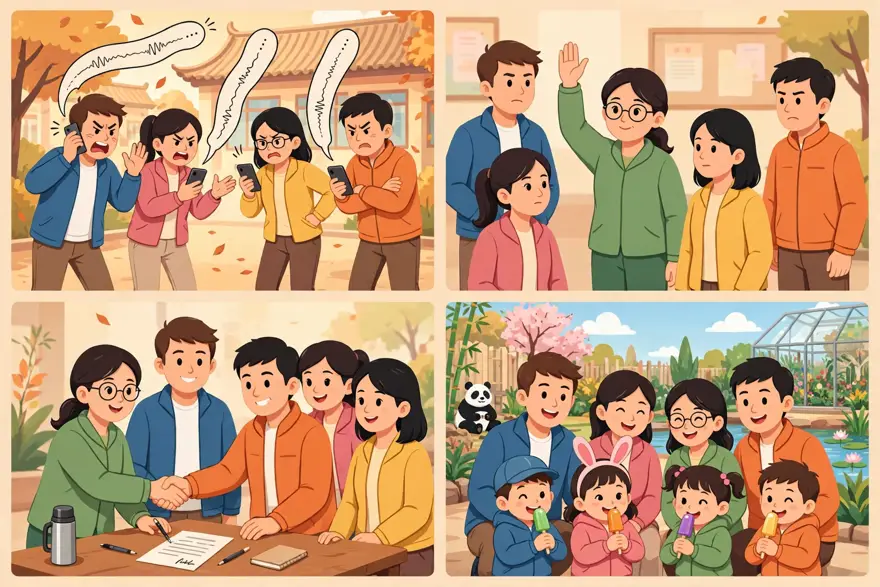

点开单元看词根；带链接的是已上线词根，其余陆续制作中。
词汇课首页 › Unit 1 › PAC
🔊 词根发音：/pæk/（和 pack「打包」同音——把和平打包签好；它来自拉丁语 pax「和平」）
Our neighbourhood owners' group chat was at war for three days straight — over the volume of the square-dancing music downstairs. Then Mrs Wang, our resident pacifist, stepped in to pacify everyone with a deal: the dancers finish an hour earlier, and the dance team gives every family a green plant. In the end, both sides signed a pact: whoever sends a 60-second voice message in the middle of the night buys milk tea for the whole group. Pace those who say an owners' group chat can never stop arguing — this one argued its way to peace.
本则为自创热点段子：词是真的，事是编的——pacify、pacifist、pact、pace 四个词一个不少，全在里面。
PAC is related to the Latin words for "agree" and "peace." The Pacific Ocean—that is, the "Peaceful Ocean"—was named by Ferdinand Magellan because it seemed so calm after he had sailed through the storms near Cape Horn. (Magellan obviously had never witnessed a Pacific typhoon.)
PAC 是上一课 BELL（战争）的反面——全和「和」有关：pacify 是把人劝和，pacifist 是主和的人，pact 是和约，pace 则是先礼后兵、和和气气地纠正别人的看法。

在图片中，小区广场上，蓝衣服的男士和绿衣服的女士隔着桌子握手，桌上放着一张写有 PACT 的纸、一支笔和一盆绿植，对应 pact（协定）；中间戴「调解员」红袖标的阿姨正微笑着劝和——她出面 pacify（安抚、平息）了这场争吵，本身就是一位 pacifist（和平主义者）；右边戴眼镜的老先生礼貌地举起手，对应 pace（书面语里礼貌地表示不同意见）。
(1) To soothe anger or agitation. (2) To subdue by armed action.
• It took the police hours to pacify the angry demonstrators.
Someone stirred up by a strong emotion can usually be pacified by some kind words and the removal of its causes. Unhappy babies are often given a rubber pacifier for sucking to make them stop crying. During the Vietnam War, pacification of an area meant using armed force to drive out the enemy, which might be followed by bringing the local people over to our side by building schools and providing social services. But an army can often bring “peace” by pure force, without soothing anyone's emotions.
（1）安抚、平息愤怒或骚动。（2）用武力镇压、平定。
例句：警察花了好几个小时才平息了愤怒的示威者。
被强烈情绪激起的人，通常靠几句好话、消除情绪的诱因就能安抚下来。不开心的婴儿常常会被塞一个橡胶奶嘴（pacifier）吸吮，好让他们停止哭闹。越南战争期间，对一个地区的 pacification（绥靖/平定）意味着动用武力把敌人赶走，随后通过建学校、提供社会服务等方式把当地人争取过来。但军队也常常可以纯靠武力带来“和平”，而不安抚任何人的情绪。
—— 下面是我的讲解 ——
🧠 记忆妙招：婴儿一哭，塞个奶嘴（pacifier）就安静了。pacify 就是「给情绪塞个奶嘴」——不管对方是哭闹的娃、发火的顾客，还是吵翻的业主群，先把情绪哄下来，再讲道理。

💡 场合与语境：哄娃、劝架是「安抚」；新闻里警察 pacify 示威者就是「镇压」，语气重得多，同一个词、两种力道。
🔁 高级替换：soothe（更温和地哄）、calm down（口语，让某人冷静）、appease（带「让步、妥协」意味的安抚）。
⚠️ 注意：pacify + 人/情绪；别和 pacifier（奶嘴，名词）混淆；正式语境里可能含武力意味，别对着孩子说「我来 pacify 你」——太像镇压了。
写作：叙事和新闻里 pacify the crowd、pacify a crying child 是高频搭配；正式文本写「平息事态」，pacify 比 calm down 更有分量。
✏️ 拼写：pac-i-fy，-ify 是动词后缀；注意 pacifier（奶嘴）是同根词。
例句：
① The teacher pacified the crying boy with a sticker and a joke.
老师用一张贴纸加一个笑话，哄住了哭闹的小男孩。
② A warm bath usually pacifies my little one after a long day.
忙了一天，一顿热水澡通常能让我家娃安静下来。
③ The manager pacified the angry customers by offering free coffee.
经理请生气的顾客喝免费咖啡，平息了众怒。
④ Soft music pacified the whole classroom before the test.
考试前，轻音乐让全班都安静了下来。
A person opposed to war or violence, especially someone who refuses to bear arms or to fight, on moral or religious grounds.
• Her grandfather had fought in the Marines in World War II, but in his later years he had become almost a pacifist, opposing every war for one reason or another.
The Quakers and the Jehovah's Witnesses are pacifist religious groups, and Henry David Thoreau and Martin Luther King are probably the most famous American pacifists. Like these groups and individuals, pacifists haven't always met with sympathy or understanding. Refusing to fight ever, for any reason, calls for strong faith in one's own moral or religious convictions, since pacifism during wartime has often gotten people persecuted and even thrown in prison.
反对战争或暴力的人；尤指出于道德或宗教原因拒绝拿起武器、拒绝参战的人。
例句：她祖父二战时在海军陆战队打过仗，但晚年几乎成了一个和平主义者，以这样那样的理由反对每一场战争。
贵格会（Quakers）和耶和华见证会都是和平主义宗教团体，亨利·大卫·梭罗和马丁·路德·金大概是最著名的美国和平主义者。和这些团体与个人一样，和平主义者并不总能得到同情与理解。无论何时、无论何种理由都拒绝参战，需要对自己的道德或宗教信念有坚定的信心，因为战时的和平主义常常让人遭到迫害，甚至被关进监狱。
—— 下面是我的讲解 ——
🧠 记忆妙招：每个群里都有那么一位——业主群、家长群、班级群，一吵架他就冒出来：「都别吵了，有话好好说。」他就是群里的 pacifist，群聊的「灭火器」，走到哪儿灭到哪儿。

💡 场合与语境：新闻、历史话题；可作名词也可作形容词（pacifist views 和平主义观点）。
🔁 高级替换：peacemaker（日常更常用，指调解人）；dove（新闻里的「鸽派」，与 hawk 鹰派相对）。
⚠️ 注意：pacifist 强调原则上反对战争/暴力，不只是「脾气好」；别写成 pacific（太平洋的 / 平和的，形容词）。
写作：议论文写战争与和平，a lifelong pacifist、pacifist beliefs 是现成的观点表达。
✏️ 拼写：pac-i-fist，-ist 表示「……的人」。
例句：
① Our class pacifist always says, "Let's talk it out, not fight."
我们班的「和平大使」总说：「有话好好说，别打架。」
② My grandma is a pacifist at heart — she hates any argument at the dinner table.
我奶奶骨子里是个和平主义者——饭桌上最讨厌任何争吵。
③ The old teacher was known as a pacifist; he never raised his voice in 30 years.
这位老教师是出了名的和平主义者，30 年没提高过嗓门。
④ Even in a heated debate, the pacifist in our group kept everyone calm.
即使辩论再激烈，我们组里的和平主义者也能让大家冷静下来。
An agreement between two or more people or groups; a treaty or formal agreement between nations to deal with a problem or to resolve a dispute.
• The girls made a pact never to reveal what had happened on that terrifying night in the abandoned house.
Pact has “peace” at its root because a pact often ends a period of unfriendly relations. The word is generally used in the field of international relations, where diplomats may speak of an “arms pact,” a “trade pact,” or a “fishing-rights pact.” But it may also be used for any solemn agreement or promise between two people; after all, whenever two parties shake hands on a deal, they're not about to go to war with each other.
两人或多方之间的协议；国家间为处理问题或解决争端而订立的条约、正式协定。
例句：女孩们立约，永远不透露那个可怕的夜晚在那栋废弃房子里发生的事。
pact 的词根里有“和平”，因为 pact 常常终结一段不友好的关系。这个词一般用在国际关系领域，外交官们会谈论“arms pact（武器协定）”“trade pact（贸易协定）”或“fishing-rights pact（捕鱼权协定）”。但它也可以指两个人之间任何郑重的协议或承诺；毕竟，每当双方握手达成一笔交易，他们是不会马上跟对方开战的。
—— 下面是我的讲解 ——
🧠 记忆妙招：pact 只有 4 个字母，短得像一次握手——两个人握一下手，就是一个 pact。国家签的是大 pact，你和娃签的是小 pact：睡前半小时不看手机，握手，成交。
💡 场合与语境：新闻里国家之间签的条约（a non-aggression pact 互不侵犯条约）；日常可以和孩子、朋友定个小约。
🔁 高级替换：agreement（通用）；treaty（国家间条约，更正式）；deal（口语，交易/约定）。
⚠️ 注意：pact 比 agreement 郑重，带「和平收场」的意味；只有 4 个字母，别写成 packed。
写作：国际新闻、历史里写 sign a pact；记叙文里写人物立约，make a pact 让约定显得郑重。
✏️ 拼写：就四个字母 p-a-c-t，别写成 packed。
例句：
① The two families made a pact: no phones at dinner.
两家人立了个约：吃饭不看手机。
② My kid and I made a pact — 30 minutes of reading before bed, no excuses.
我和孩子立了个约：睡前读 30 分钟书，没有借口。
③ The two classes signed a pact to keep the hallway quiet during exams.
两个班签了个约：考试期间走廊保持安静。
④ They shook hands on a pact to share the classroom bookshelf fairly.
他们握手立约，公平共用教室书架。
Contrary to the opinion of.
• She had only three husbands, pace some Hollywood historians who claim she had as many as six.
This word looks like another that is much more familiar, but notice how it's pronounced. It is used only by intellectuals, and often printed in italics so that the reader doesn't mistake it for the other word. Writers use it when correcting an opinion that many people believe; for example, “The costs of the program, pace some commentators, will not be significant.” So what does pace have to do with peace? Because it says “Peace to them (that is, to the people I'm mentioning)—I don't want to start an argument; I just want to correct the facts.”
与……的意见相反；尽管（某人）持不同意见。
例句：她一生只结过三次婚，尽管一些好莱坞史学家声称她结过六次。
这个词看起来像另一个熟悉得多的词，但注意它的发音。它只被知识分子使用，而且常常用斜体印刷，以免读者把它误认成另一个词。作者在纠正一个很多人都相信的观点时使用它；比如：“The costs of the program, pace some commentators, will not be significant.”（尽管一些评论员持不同意见，这个项目的花费并不大。）那么 pace 和 peace 有什么关系呢？因为它的意思是“愿他们安息（也就是说，愿我提到的那些人安好）——我不想挑起争论，我只是想纠正事实。”
—— 下面是我的讲解 ——
🧠 记忆妙招：pace 是学术圈的「先礼后兵」——先说「愿您安息，我不是来吵架的」，再把对方的观点纠正过来。想象一位老教授扶扶眼镜：「Pace 李教授，我不敢苟同……」然后全场安静。
💡 场合与语境：只出现在学术写作和严肃评论里，口语里绝对不用。
🔁 高级替换：despite what X says / contrary to X's opinion（日常说法）；although（通用连词）。
⚠️ 注意：读 /ˈpɑːtʃeɪ/，别读成「步伐、速度」那个 pace /peɪs/；常斜体印刷，以免读者认错。
写作：学术写作、书评里纠正流行观点时用：句首 Pace X, …，或插入语 …, pace X, …；常斜体印刷。
✏️ 拼写/发音：读 /ˈpɑːtʃeɪ/，别读成「步伐、速度」那个 pace /peɪs/。
例句：
① Pace my students, who say grammar is boring — the new game made it fun.
尽管我的学生们说语法很无聊——新游戏还是让它变得有趣了。
② The costs of the trip, pace some parents, are actually very low.
尽管一些家长持不同意见，这次出行的花费其实很低。
③ Pace those who call him lazy, he finishes his homework first every day.
尽管有人说他懒，他每天都是第一个写完作业的。
④ The film, pace the critics, was a huge success with the audience.
尽管评论家们不以为然，这部电影在观众中大获成功。
家长群因为春游地点吵翻了天：去动物园还是去植物园，60 秒语音一条接一条。群里的「和平大使」李妈妈出面 pacify 全场：「别吵了，孩子们两个都想去！」最后大家签了个 pact：上午动物园、下午植物园，谁迟到谁请全班吃冰棍。Pace 那些说家长群只会吵架的人——这回还真吵出了个春游。（李妈妈就是大家心中的 pacifist。）

🌍 英文版：
The parents' group chat exploded over the spring trip: zoo or botanical garden? Sixty-second voice messages flew back and forth. Then Mrs. Li, our pacifist, stepped in to pacify everyone: "Stop fighting — the kids want both!" In the end, we signed a pact: zoo in the morning, garden in the afternoon, and whoever is late buys ice lollies for the whole class. Pace those who say parents' group chats only ever argue — this time we argued our way to a spring trip.
| 哄娃、劝架、平息事态 | pacify 安抚；平息 |
| 和平反战话题、群里的「和平大使」 | pacifist 和平主义者 |
| 国家签约、生活里立约 | pact 契约；协定 |
| 学术写作、书评里客气纠正观点 | pace 尽管……持不同意见 |
1. After the argument, she brought tea and a smile to her husband.
2. He refuses to join any fight — a true at heart.
3. The two schools made a to share the sports field on weekends.
4. some teachers, the new timetable actually works very well.
5. The nurse the frightened child with a soft lullaby.
听写（看中文打英文）：
① 安抚、平息
② 和平主义者、反战者
③ 契约、协定、条约
④ 尽管……持不同意见（书面）
1. After the argument, she brought tea and a smile to pacify her husband.
吵完架，她端来茶、带着笑去安抚丈夫。
2. He refuses to join any fight — a true pacifist at heart.
他拒绝参与任何争吵——骨子里是个真正的和平主义者。
3. The two schools made a pact to share the sports field on weekends.
两所学校立约，周末共用运动场。
4. Pace some teachers, the new timetable actually works very well.
尽管一些老师持不同意见，新课表其实挺好用的。
5. The nurse pacified the frightened child with a soft lullaby.
护士哼着轻柔的摇篮曲，哄住了受惊的孩子。
听写：① pacify（安抚、平息） ② pacifist（和平主义者、反战者） ③ pact（契约、协定、条约） ④ pace（尽管……持不同意见（书面））
和精读一样的卡片：正面只有情景，没有答案。先在脑子里搜出那个词、出声说出完整的句子，再点卡片翻到背面对照。每个词两个情景：情景 1 练提取（第 3 步），情景 2 换了个场景练迁移（第 5 步）；翻到背面后如实点记录，记录保存在这台设备上。
两个班因为运动会入场顺序吵了起来，体育委员跑来找你告状。你把两边班长叫到一起，各让一步：抽签定顺序，先出场的班多拿一面小旗，两边都点了头。
What did you do to the two quarrelling class monitors?
航班延误了三个小时，候机厅里的旅客围着地勤发火。地勤一边发水，一边帮大家改签下一班，还答应报销打车费，旅客们慢慢散开坐下了。
What did the ground staff do to the angry passengers?
pacify /ˈpæsɪfaɪ/ v. 动词
安抚、平息
🎬 场景范句
情景 1：I pacified the two monitors by letting them draw lots for the order.
我让两个班长抽签定入场顺序，把他们安抚下来了。
情景 2：The ground staff pacified the angry passengers with water, new tickets and taxi money.
地勤用水、新机票和打车费，安抚住了愤怒的旅客。
🧭 使用场景
哄娃、劝架是「安抚」；新闻里警察 pacify 示威者就是「镇压」，语气重得多，同一个词、两种力道。
⚠️ 注意
pacify + 人/情绪；别和 pacifier（奶嘴，名词）混淆；正式语境里可能含武力意味，别对着孩子说「我来 pacify 你」——太像镇压了。
第 3 步 · 提取（情景 1）记录：
第 5 步 · 迁移（情景 2）记录：
注意：这里不是要求你在所有生活场景中强行使用高级词汇，而是让你知道它们在什么情况下才真正适合出现。
第 4 步「表达」：每个词一个开口提示，先别看参考句，出声说一句你自己的真事，再打开参考句对照。
pacify：想想你哄娃、劝学生、安抚顾客的一次经历，用 pacify 说一句。
A cup of hot milk usually pacifies my little one before bed.
睡前一杯热牛奶，通常就能让我家娃安静下来。
pacifist：说说你认识的一位「和平大使」——家人、学生、同事都行，用 pacifist 说一句。
The new teacher is a real pacifist; he settles every quarrel with a joke.
这位新老师是个真正的和平主义者，他用一个笑话就能化解每场争吵。
pact：说说你和朋友、和娃立过的一个小约定，用 pact 说一句。
My friend and I made a pact: no takeaway food for a month, or the loser pays for dinner.
我和朋友立了个约：一个月不点外卖，输的人请吃晚饭。
pace：想想教研会上你想客气反驳的一位同事，用 pace 写一句书面语。
Pace my colleague, who says dictation is outdated, my students love it.
尽管我的同事认为听写过时了，我的学生却很喜欢听写。